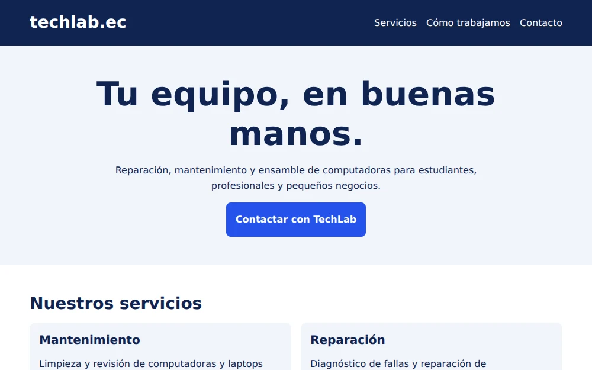
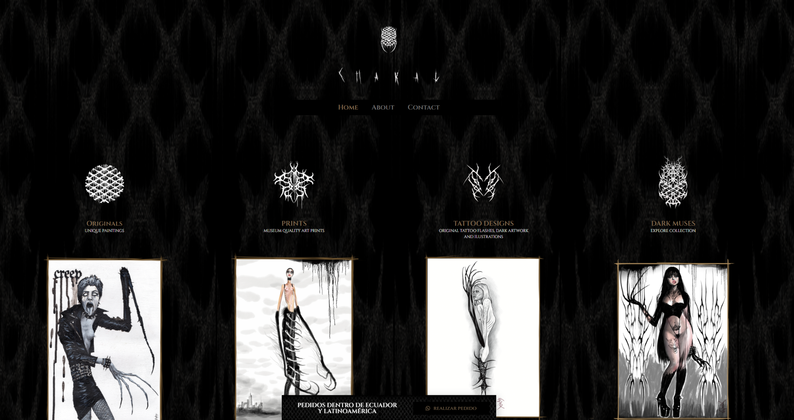
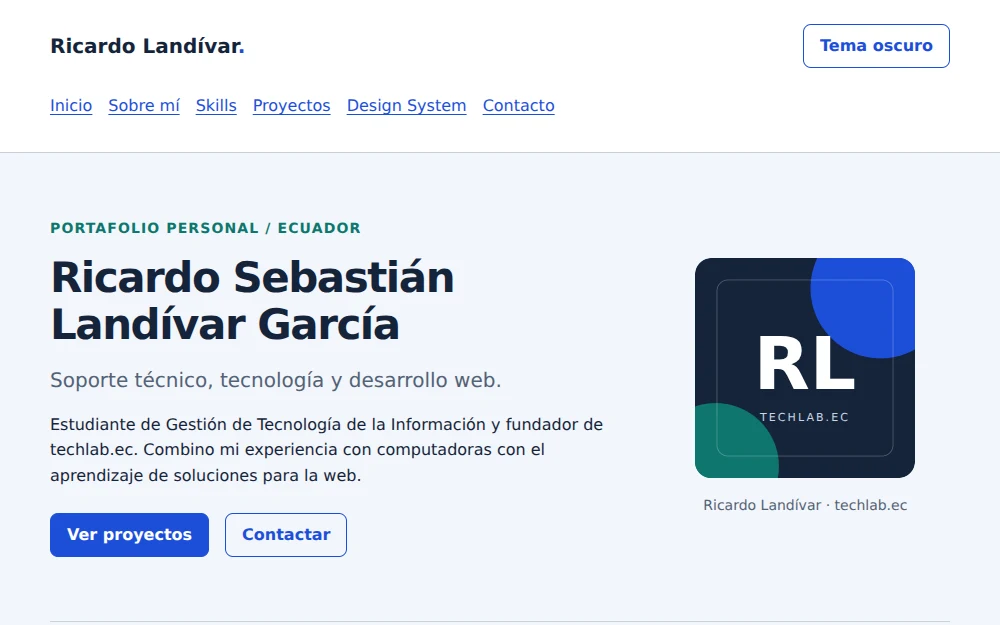

Semestre de Gestión de Tecnología de la Información.
PORTAFOLIO PERSONAL · DESARROLLO WEB Y SOPORTE TÉCNICO
Ricardo Sebastián
Landívar García
Ingeniero de Software y fundador de TechLab.ec.
Combino soporte técnico, mantenimiento de equipos y maquetación web para crear soluciones funcionales, ordenadas y visualmente atractivas. Mi enfoque está en resolver necesidades reales con una presentación clara y adaptable.
- HTML5
- CSS3
- JavaScript
- WordPress
- Elementor
- Hardware & soporte
Áreas principales: desarrollo web y soporte técnico.
Marca propia enfocada en hardware, reparación y asistencia.
01 / PERFIL
Sobre mí
Mi perfil combina atención técnica, criterio visual y aprendizaje constante en tecnologías web.
Trayectoria
Soy fundador y administrador de TechLab.ec, un proyecto orientado al mantenimiento, reparación y ensamble de computadoras, además de soporte remoto y presencial.
He trabajado con clientes en Guayaquil y Quito, resolviendo desde fallas técnicas hasta necesidades de instalación, optimización y mantenimiento preventivo.
Lo que me interesa construir
Actualmente profundizo en desarrollo web para presentar servicios, productos y proyectos con una mejor experiencia visual. Me interesa crear sitios claros, responsive y fáciles de navegar.
También he colaborado en ajustes visuales para sitios existentes hechos con WordPress y Elementor, corrigiendo distribución, jerarquía visual y adaptación a móvil.
02 / CONOCIMIENTOS
Habilidades técnicas
Tecnologías y áreas en las que tengo experiencia práctica o me encuentro desarrollando conocimientos.
Desarrollo web
-
HTML5Intermedio
-
CSS3Intermedio
-
JavaScriptBásico
-
PythonBásico
CMS & herramientas
-
WordPressIntermedio
-
ElementorIntermedio
-
Git / GitHubBásico
-
Node.jsBásico
Soporte técnico
-
HardwareAvanzado
-
DiagnósticoAvanzado
-
MantenimientoAvanzado
-
Asistencia remotaAvanzado
03 / EXPERIENCIA Y PRÁCTICA
Proyectos destacados
Una muestra de proyectos académicos y trabajos donde apliqué criterios de estructura, presentación visual y adaptación responsive.
3 proyectos

TechLab.ec
Página de servicios de mantenimiento, reparación, ensamble y soporte técnico.
Necesidad: reunir los servicios de la marca y facilitar el contacto desde cualquier dispositivo.
Desarrollo: estructura semántica, estilos propios y distribución mobile-first con Grid y Flexbox.
HTML5CSS3
Ver proyecto

CHAKAL: adaptación visual
Ajustes de presentación sobre un portafolio artístico existente en WordPress y Elementor.
Necesidad: mejorar la distribución, el balance visual y la legibilidad de las galerías en escritorio, tableta y móvil.
Mi participación: correcciones en Originals, Prints y Tattoo Designs, además de ajustes en tipografía, márgenes, botones y composición general.
WordPressElementor
Visitar sitio de CHAKAL
Trabajo realizado en una copia local; el sitio público puede mostrar otra versión.

Portafolio personal
Presentación de mi perfil, formación, habilidades y proyectos en un solo sitio web.
Necesidad: comunicar mi experiencia técnica y mi proceso de aprendizaje de desarrollo web de forma ordenada y visualmente atractiva.
Desarrollo: sistema visual reutilizable, tema claro y oscuro, menú móvil y filtros de proyectos con JavaScript.
HTML5CSS3JavaScript
Ver presentación
Ver repositorio
04 / SISTEMA VISUAL
Design System / Componentes
El sitio utiliza un pequeño sistema visual basado en tipografía moderna, colores reutilizables, espaciado consistente y componentes repetibles.
Colores
- Primary
--color-primary#1d4ed8 - Secondary
--color-secondary#0f766e - Accent
--color-accent#7c3aed - Background
--color-background#f4f7fb - Surface
--color-surface#ffffff - Text
--color-text#101828
Tipografía
Sora para títulos · Inter para textos · jerarquía clara y lectura cómoda.
H1 · Presentación
H2 · Sección
H3 · Componente
Párrafo: información principal con buena legibilidad.
Texto secundario: detalles y explicaciones complementarias.
Enlace a los proyectosEspaciado
--space-xs: 0.25rem--space-sm: 0.5rem--space-md: 1rem--space-lg: 1.5rem--space-xl: 2rem--space-2xl: 4rem
Bordes suaves, sombras ligeras y separación consistente entre secciones.
Botones y badges
HTML5
CSS3
JavaScript
Navegación
Card de proyecto
TechLab.ec
Página de servicios técnicos adaptable a diferentes dispositivos.
HTML5CSS3
05 / CONVERSEMOS
Contacto
¿Tienes un proyecto o necesitas soporte técnico?
Puedes escribirme por correo, visitar el perfil de TechLab.ec o revisar mi GitHub para ver más avances.